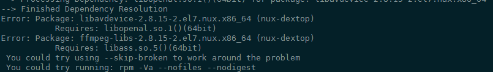
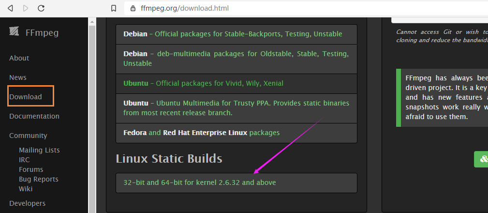

ffmpeg是什么鬼
因为实际上我也不知道ffmpeg是什么鬼。
我只知道想用它来把一段长视频切成几段。
大概清楚它是一个开源的、挺强大的视频处理软件。
官网地址：https://ffmpeg.org/
为什么要搞这个
我用VPS下载了一些视频来学英语，但是视频太大，我一次就切个2分钟来听，比较容易消化。
安装
一般会认为直接 yum install ffmpeg就行了，但实际上不行，会报错。
错误安装方法
网络上很流行的一个错误的安装方法（至少在我的机器上不管用）：
https://www.vultr.com/docs/how-to-install-ffmpeg-on-centos
按照这种做法，到了
sudo yum install ffmpeg ffmpeg-devel -y
总是会报错：
Error: Package: libavdevice-2.8.15-2.el7.nux.x86_64 (nux-dextop)
Requires: libopenal.so.1()(64bit)
Error: Package: ffmpeg-libs-2.8.15-2.el7.nux.x86_64 (nux-dextop)
Requires: libass.so.5()(64bit)

参考的这篇https://www.cnblogs.com/Dreamer-1/p/10399492.html
他说如果出现报错就可以把/etc/yum.repos.d/epel.repo 进行修改，注释。
然后就能安装成功了，但是我试了还是不行。
后面也尝试了直接从源代码编译的办法，真是又臭又长，水平还没到这份上。
正确的办法
还是要上官网啊，人家早就跟你说有已经编译好的版本。

然后参考这篇 https://www.jibing57.com/2018/11/15/a-way-to-install-ffmpeg-to-Amazon-Linux-and-ElasticBeanstalk/
1 | 下载 |
这个实际上就是下载一个绿色版，然后拷贝来执行就可以了。
要注意的是，他这里的 ffmpeg-release-64bit-static.tar.xz 是不可用的，要上官网找到最新的Release包的位置。
https://johnvansickle.com/ffmpeg/
截止目前最新的是：
https://johnvansickle.com/ffmpeg/releases/ffmpeg-release-amd64-static.tar.xz
视频切分
1 | ffmpeg -ss 00:00:00 -t 00:01:00 -i EBEN_PAGAN_Part1.mp4 -vcodec copy -acodec copy output.mp4 |
命令解释
- -ss 指定从什么时间开始
- -t 指定需要截取多长时间
- -i 指定输入文件
在这里我的输入文件是EBEN_PAGAN_Part1.mp4
输出文件是output.mp4
命令参考：https://www.jianshu.com/p/eff314074177
视频压缩
无损压缩
1 | ffmpeg -i output1.mp4 -vcodec libx264 -preset veryslow -crf 28 -acodec copy smallDavid.mp4 |
这种方法是无损的，但是很慢。
参考
http://livevideostack.com/portal.php?mod=view&aid=22
http://tigerdu.com/2017/05/14/ffmpeg-guide/
有损压缩
修改分辨率的压缩方法（有损压缩）推荐：
1 | ffmpeg -i output1.mp4 -b:v 400k -s 960x540 smallDavid.mp4 |
来源：https://blog.csdn.net/zhezhebie/article/details/79263492
抽取MP3
1 | ffmpeg -i min2_4.mp4 -vn -y -acodec copy min2_4.m4a |
视频一般只能抽取m4a，还需要转换为mp3
1 | ffmpeg -i min2_4.m4a -acodec libmp3lame -ab 128k min2_4.mp3 |
后台运行
1 | nohup ffmpeg -i DavidD.mp4 -b:v 400k -s 960x540 smallDavid.mp4 & |
其实就是前面加个nohup，注意后面还有个&字符。
这样运行后当前文件夹下面会生成一个nohup.out 文件。
查看当前正在运行的后台进程状态可以用
1 | jobs -l |
这时候会把进程号显示出来。
但是这个命令只是把当前终端提交的 job显示出来
最终还是要用这个
1 | ps -aux |grep David |
但这样会把自己也显示出来
1 | ps -aux|grep David| grep -v grep |
这样就不会了。
终止后台进程
然后要终止任务就
1 | kill -9 进程号 |
即可。
参考
nohup和&后台运行，进程查看及终止
https://www.cnblogs.com/baby123/p/6477429.html
使程序在Linux下后台运行 （关掉终端继续让程序运行的方法）
https://www.cnblogs.com/lidabo/p/6622263.html
TODO
感觉还是要多研究啊，但是这个ffmpeg水还是很深的，学到哪算哪吧。